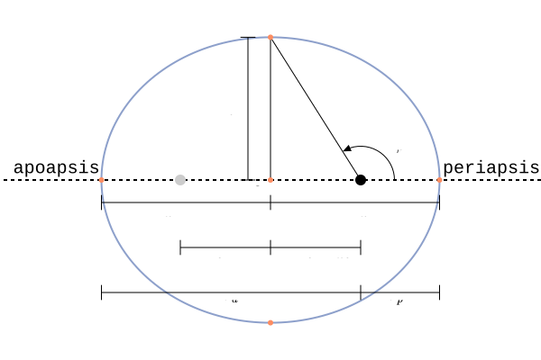
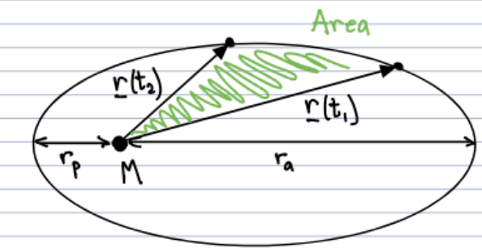

0. Preface
This blog will act as the mathematical groundwork for future implementations of my Three Body Problem. project. In order to make an accurate simulation, one should have a deep understanding of the physics behind the simulation. All of the math used here was learned in my Engineering Mechanics class. Derived and taught by Prof. Ken Kamrin.
1. Orbital Mechanics
Let's start our journey of understanding the Universe by taking into consideration a celestial body that is most familiar to us, the Earth. If we want to analyze the interaction between our Earth, a very massive object, and a satellite. We say that \(m << M_e\), in English this just means that the mass of the satellite is so much smaller than the mass of the Earth that it is inconsequential. Let's also assume that the center of mass of the Earth rests at the origin (0,0) and the mass of the satellite is at some distance \(\mathbf{r}(t)\).
Let's first define our simple Cartesian Kinematics for a 3-dimensional space:
We can also define \(\mathbf{F}_g\) as a potential, which will allow us to calculate the escape velocity on Earth:
Where
Using the work-energy theorem:
Equating both E(right after launch) and E(at escape) allows us to solve for \(v_e\):
Unfortunately, the work-energy theorem cannot tell us anything about trajectories since \(v_e\) is a magnitude and not a vector. In order to get more details, let's augment this with another conservation law, Angular Momentum:
Let's find some explicit expressions for \(\mathbf{r}\) and \(\mathbf{v}\) using kinematics in polar coordinates:
Now \(\mathbf{H}\) can be expressed as such:
After this point, I cannot really explain what my professor did, but nonetheless here it is... (I plan to continue this derivation)
3. Orbital Geometry
Solveing the equations above using seperation of variables and we find \(r(\theta)\), the Orbit Equation, which defines all the different paths two orbiting bodies can make:
Where
Trajectory Parameter: \( P = \frac{H_0^2}{m^2B}\)
Eccentricity: \( e = \sqrt{1 + \frac{2E_0H_0^2}{m^3B^3}} \)
Offset Angle: \( \theta_i - \cos^\text{-1}(\frac{P - r_i}{er_i}) \)
This equation defines "conic sections" in orbits.

When \( e = 0 \), the orbit is a circle.
When \( 0 < e < 1 \), the orbit is an ellipse.
When \( e = 1 \), the orbit is a parabola.
When \( e > 1 \), the orbit is a hyperbola.
Let's talk a little bit about how elliptical orbits work. As all orbits are elliptical.
The pariapsis \(r_p\) and the apoapsis \(r_a\) correspond to the length between the focii and the end of an orbit. There are two definitions for this length in elliptical orbits. We'll define them here.
Kepler's Laws
Kepler wanted to find a relationship ship between the area of a slice in an elliptical orbit and the time it took to travese the outer edge of that slice. He did this without Calculus. Although that is very impressive, we will be using Calculus in this blog because we are not as cool as Kepler.
First lets find an equation for the area of a slice from \(\mathbf{r}(t_1)\) and \(\mathbf{r}(t_2)\).
The area of the slice is given by the following:
And since \(\theta\) is a function of t:
Which simplifies to:
\[ A = \int_{t_1}^{t_2} \frac{1}{2m} H_0 dt \]And finally:
\[ A_\text{Slice} = \frac{H_0}{2m}(t_2 - t_1) \]This is Kepler's second law which states; "Equal area, equal time"
Orbital Period
What is the area of a full orbit? or, area of Ecclipse?
Now if we set \(A_\text{Slice} = A_\text{Ecclipse}\) we can solve for the total time it takes to make a full orbit:
Where
This is Kepler's Thrid Law